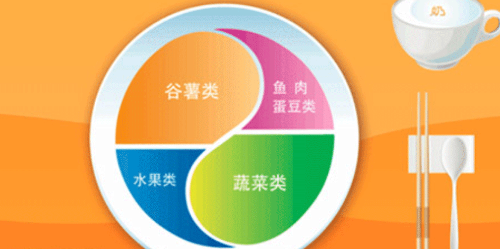

中国居民膳食指南
中国居民膳食指南（2016）》发布 提出六条核心推荐条目
人民网北京5月13日电（记者马晓慧）今天上午，国家卫生计生委召开例行新闻发布会，发布《中国居民膳食指南（2016）》。
指南由一般人群膳食指南、特定人群膳食指南和中国居民平衡膳食实践三个部分组成。针对2岁以上的所有健康人群提出6条核心推荐，分别为：食物多样，谷类为主；吃动平衡，健康体重；多吃蔬果、奶类、大豆；适量吃鱼、禽、蛋、瘦肉；少盐少油，控糖限酒；杜绝浪费，兴新食尚。
针对孕妇、乳母、2岁以儿、2—6岁学龄前儿童、7—17岁儿童少年、老年和素食人群等特定人群的生理特点及营养需要，在一般人群膳食指南的基础上对膳食选择提出特殊指导。
同时推出的还有修订版中国居民平衡膳食宝塔、中国居民平衡膳食餐盘和儿童平衡膳食算盘等三个可视化图形，指导大众在日常生活中进行具体实践。
中国居民平衡膳食宝塔（2016）
中国居民平衡膳食餐盘（2016）
中国儿童平衡膳食算盘（2016）
为了方便百姓应用，此次还特别推出《中国居民膳食指南（2016）》科普版，以更贴近百姓生活的方式回答百姓关切，提出科学建议，帮助大家做出有益健康的饮食选择和行为改变。
据悉，《中国居民膳食指南（2016）》是在《中国居民膳食指南（2007）》的基础上修订的，修订过程充分考虑了我国经济社会发展现状，并根据《中国居民营养与慢性病状况报告（2015年）》中指出的我国居民面临营养缺乏和营养过剩双重挑战的情况，结合中华民族饮食习惯以及不同地区食物可及性等多方面因素，参考其他国家膳食指南制定的科学依据和研究成果，对部分食物日摄入量进行调整，提出符合我国居民营养健康状况和基本需求的膳食指导建议。
与2007版比较，《中国居民膳食指南（2016）》有三方面特色：
一是提高可操作性和实用性。将10条推荐精简至6条，文字简练、清晰，容易记忆，同时提供更多的可视化图形及图表、食谱，便于百姓理解、接受和使用。
二是注重饮食文化传承发扬。在新指南中专门提出弘扬尊重劳动，珍惜粮食，杜绝浪费的传统美德，强调个人、家庭、社会、文化对膳食和健康的综合影响作用，建议在传承民族传统饮食文化的同时，开启饮食新理念，着力解决公共营养和健康的现实问题，并鼓励社会提供良好的支持环境。
三是兼顾科学性和科普性。《中国居民膳食指南（2016）》中包括大量的科学证据和理论分析，对从事营养与健康的科教专业人员是很好的参考工具。为方便大众理解使用，这次特别编撰科普读本，用百姓易于理解的语言讲百姓关心的常识，结合与百姓生活密切相关的饮食营养问题，以图文并茂的形式、通俗易懂的表达，对核心推荐内容进行科学讲解。